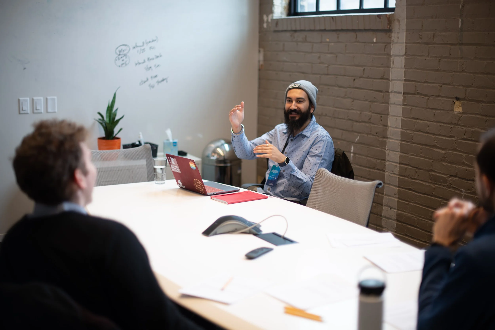

I am currently building delightful experiences at The Walt Disney Company, based in Seattle.
I’m a product designer turned product manager, which lets me flex my creative ideas as much as my analytical, strategic thinking. Even before my academic pursuits in computer science and user experience design, I was fascinated by machines and how humans interact with them. Examining and improving this interaction has been at the core of my career in the technology space. I am passionate about art; it offers me both a relief from the scientific nature of tech and intrigues me that how the two worlds are distinct yet so similar.

My approach in life is to leave things in a better shape than when I picked them up.
In my professional journey, I have worked with startups like Structural and RealSelf and with tech giants like Amazon, Oracle, and Microsoft. I thrive in places with a culture focused on growth, learning, and being your best self. I love working with talented and kind people, always.
I’m incredibly fortunate to have received mentorship from talented advisors at school and some of my professional colleagues. I have made it a personal goal also to give back to the community. I take up projects pro-bono from time to time; most recently was one with The University of Michigan on a COVID-19 symptom tracker app. I partnered with AntWalk to create content on their ed-tech site to help budding professionals in India and other countries get experiential insights from the industry. I also provide 1:1 mentoring to discuss career goals and challenges.
When I am not obsessing over a customer's need or pushing pixels in Figma, I’m usually watching a cooking show, thinking about the next batch of coffee beans I want to get my hands on, or making plans to go to an art show or museum. If you want to discuss any of these activities, feel free to reach out. I currently reside in Seattle with my partner and our rescue pup, Jolly.
At a glance
- Name pronunciation
- her-unsh-veer
- Pronouns
- He/Him/His
- Current location
- Seattle, WA, United States
- Place of birth
- Bombay, India
- Main gig
- Product Manager @ Disney
- Side gigs
- Mentor @ University of Washington
- Freelance Designer @ HVG Studio
- Currently learning
- Photography (Nikon D-3500)
- Education
- M.S. in Information Management, University of Washington
- B.S. in Computer Engineering, University of Mumbai
- Languages spoken
- English, Punjabi, Hindi
- Interests
- Art shows, museums, live music, thriller films, video games, my pup, city adventures